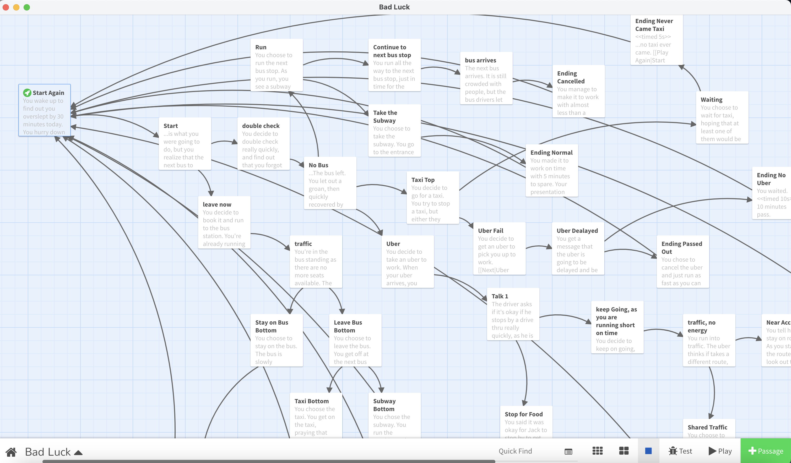
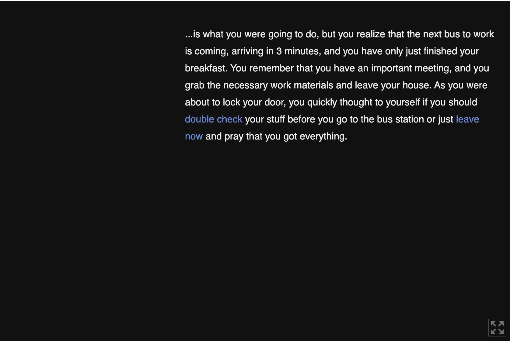
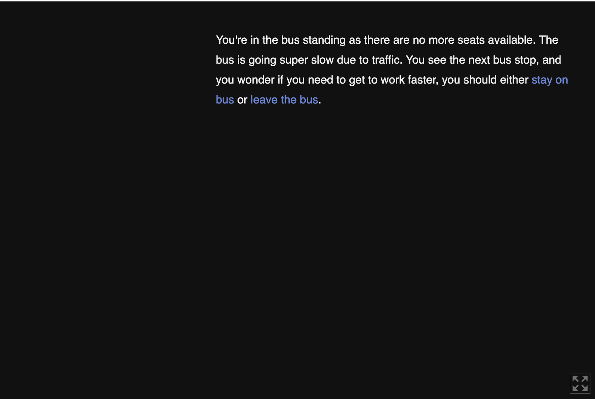
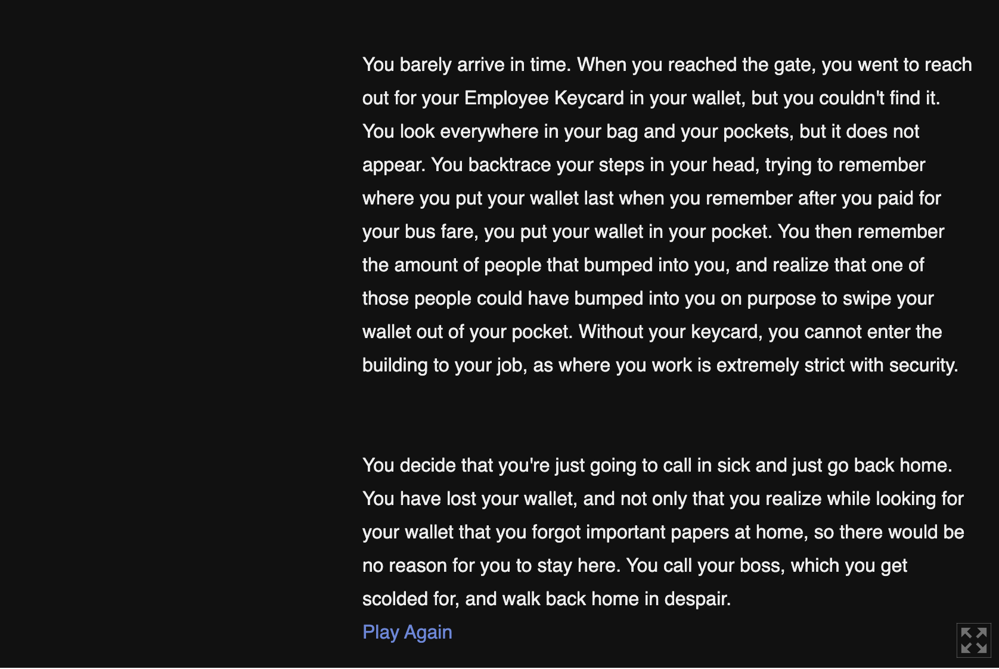

Last Updated On: 10/09/2025 5:32 PM PST
Refresh for up-to date site.
Click here to play "Bad Luck Day"
Bad Luck Day was the first graphical game I ever created. This was my first project for CMPM 80K in UCSC, and I had to make a text base
game using Twine. For this project, I had to design a story that worked well with the link style of Twine, which led me to the idea of a day where
whatever choice you picked, a bad luck event would happen to you. Next, I had to design the choices players can make into the game as well as how
these choices will affect the current story line. With each choice I added for players to click on, I had to make each choice interesting and different
so players won't feel like each choice is the same as the other choices in the game and each choice is something new that the player can expierence.




Click here to play "Life of Slime"
The first non-Twine graphical game I ever created. This was a final group project for CMPM 80K in UCSC, and were given the
restriction of only building our game using the free version of Construct. For this project, I created the pixel art such as the slime,
the enemies, hazards, and the grass. After creating those assets, I then went to design each of the levels of the game, placing hazards and
enemies and figuring out what is a good diffculty for the current level, and balancing out level progression and difficulty.
Video Showcasing the gameplay Life of Slime
Click here to play "Shape Wars"
This game was created for an assignment for CMPM 120, where we were tasked to create an endless runner using Phaser3. Given the time restraint of the assignment as well
as my inexperience with Phaser3 at the time, I wanted to design a game using the most simplistic designed assets, but fleshed out the game mechanics of my endless runner.
This led to the creation of Shape Wars, where players controled a Blue Square with limited amount of projectile based attacks, with the goal of lasting as long as they can without
getting hit by one of the red triangles falling down. During this time, I was also learning how physics movement worked in Phaser3, which created a "happy accident" of giving
the Blue Square a "slippery" movement with moving left and right, which worked really well to the game, as players had to manage their inputs to make sure they don't slide to a direction
and get hit by one of the Red Triangles. I also designed a difficulty spike when every 5 seconds has passed, where the Red Triangles speed will slightly go faster. This way, players won't
get too comfortable with the current speed of the triangles and will have to pay attention to the red triangle speeds so they don't get hit by them.

Video Showcasing the gameplay of Shape Wars
Click here to play "Rock Block"
This game was a group project for our final for ARTG 120. My role for this group project was designing the collison of objects in the game. This meant collision that can occur with the player
and zombies when they either collide with each other or other things in the game like Blocks placed by players or projectiles that players throw at the zombies. Our original idea of our game was
overscoped with the time restraint that we were given and the multile bugs that we encountered when we creating our game over the days, so unfortunatnly a lot of things were cut out from our original pitch.
However, this was a good lesson for us to avoid overscopiing our game project with the given time and manpower we had. While this project didn't live up to the full potential that we sought out, I
see this project as a reminder for me that while it's nice that we had interesting and cool ideas as a group, sometimes it's better to start with a simple small goal and work up from there.


Click here to play "The Crane Game"
This was a group project for our 2nd Prototype Assignment for CMPM 170, which is our Capstone class that focused on creating prototypes for games. For this assignment, we had to build a
One-Input game using the Crisp-Game-Lib engine. This game engine was very limititing on what developers can create with this game engine with it's very minimal game functions that it had, but
on top of a small library of functions that can be used to create games, this engine only allowed players of the game with 1 Input. Clicking the "W" key or the "P" key will
do the exact thing, so we had to come up with a game where the game mechanics, UI navigation, and player controls could only be controlled with one button. This restrcition led us to the idea
of creating a crane game, where the crane is stationary while boxes are moving towards the left. Clicking the input will push the crane down, and it'll continue to go down until it collides with a
box, reached the ground, or the input was let go, in which then the crane would immediatly be put back to it's original position. I worked on creating the boxes and the collison code for the boxes,
as well as the making the crane go back to it's original spot. I designed the collison where if the players did not get the right colored box that the game tells the players to get, it would subtract
time from the timer in the game, but if they do get the right box the timer and score will go up.
Our documentation video created for The Crane Game.